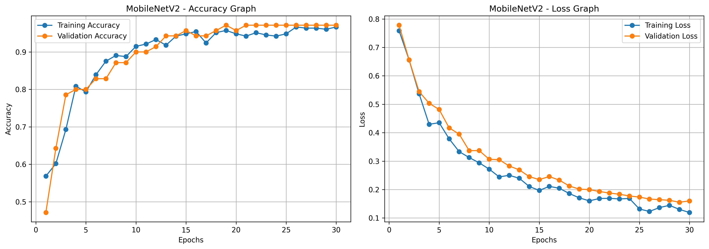
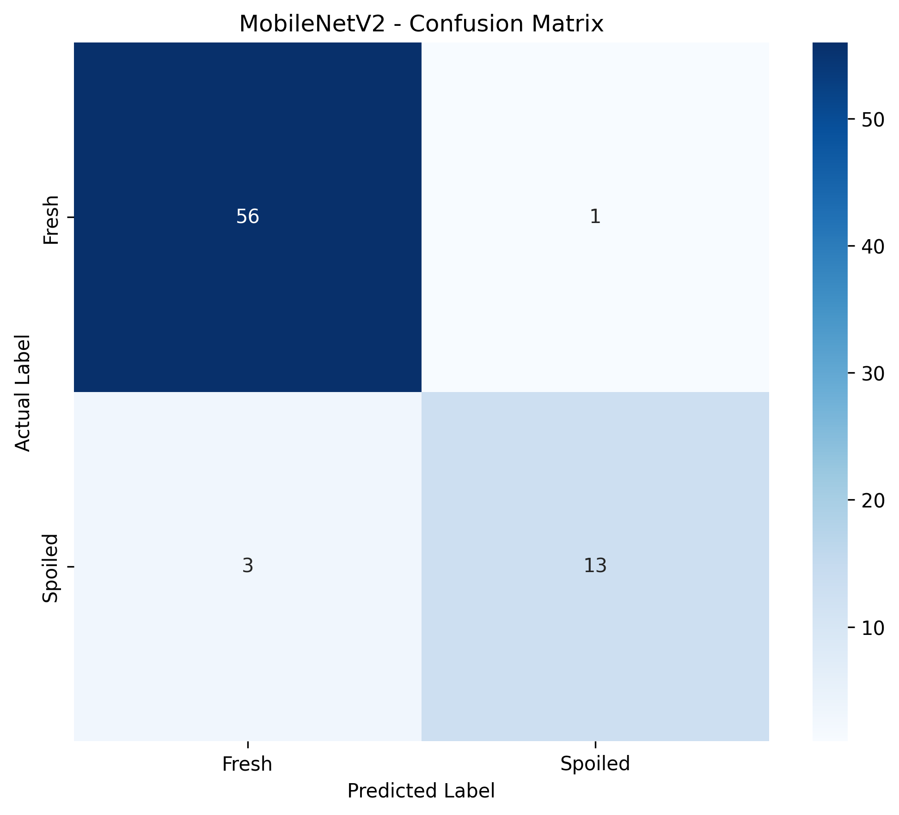
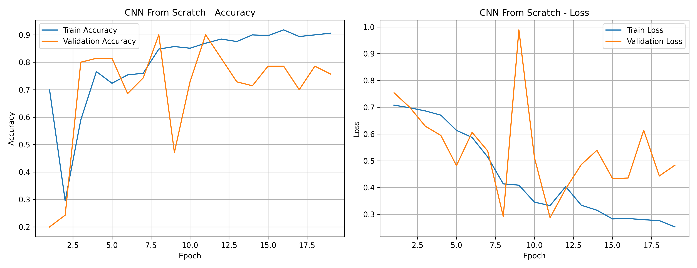
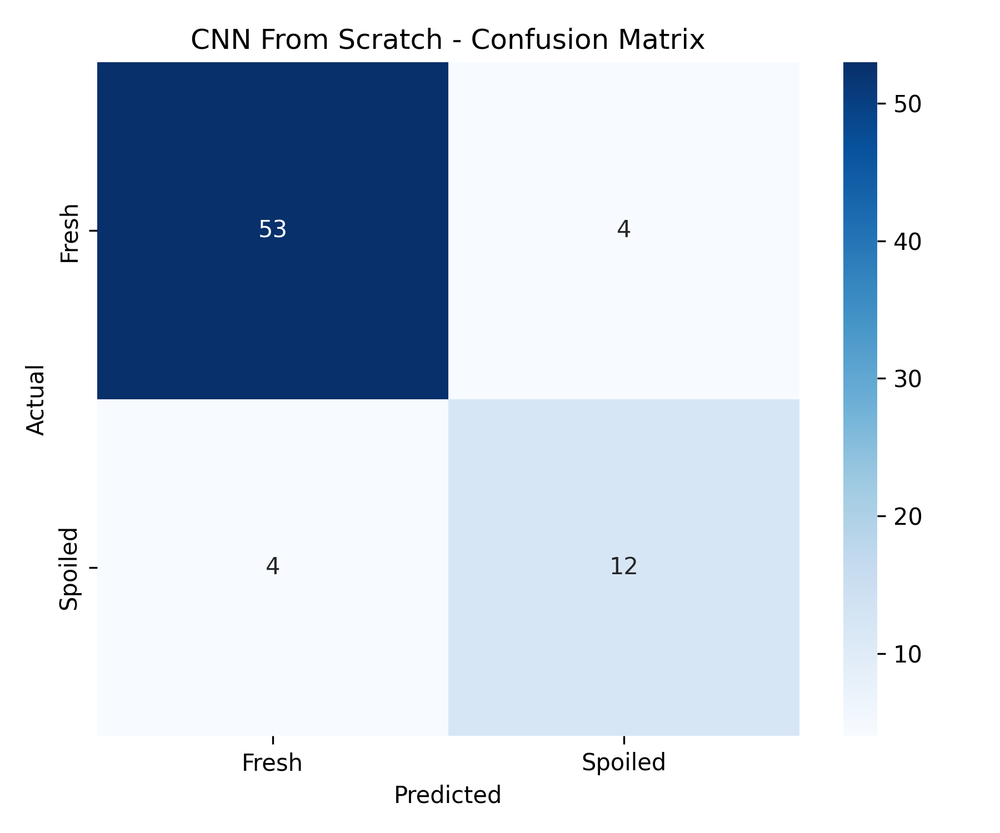

94.52%
Test accuracy
TRAIN 97.57%VALIDATION 97.14%
An intelligent visual screening experience for bread spoilage. Upload a photo and explore predictions powered by deep learning.
Upload a bread image to receive a model-based assessment of visible spoilage.
or click to browse your device
Maximum file size: 10 MBUpload an image and run the analysis to see the model prediction.
ⓘ This tool screens for visible spoilage patterns only. A “Fresh” prediction does not establish food safety or rule out invisible contamination.
Two architectures, one dataset, transparent evaluation.
Test accuracy
Test accuracy
374 Fresh / 98 Spoiled
Held-out test set · 73 images
Spoiled recall: MobileNetV2 81.25% · Custom CNN 75%. Results are based on a small test set and may not generalize to every real-world photo.

MobileNetV2 · Training curves
MobileNetV2 · Confusion matrix
Custom CNN · Training curves
Custom CNN · Confusion matrixA practical computer vision project exploring visible bread spoilage.
Visual signs of mold can be overlooked or interpreted inconsistently. BreadGuard AI explores image-based assistance for recognizing visible spoilage.
Images were curated and split into training, validation and test sets. A CNN trained from scratch was compared with ImageNet-pretrained MobileNetV2.
Visual classification cannot determine microbiological safety. A negative result does not mean bread is safe to eat, and uncertain cases need human judgment.
Bread is a commonly consumed food product, but its appearance can change during storage as visible mold and other spoilage patterns develop. Manual visual inspection can be inconsistent: early visible signs may be subtle, lighting conditions vary, and different people may interpret the same image differently.
Our objective: BreadGuard AI explores whether deep learning can assist with identifying visible spoilage patterns from photographs. Users can upload a bread image and receive a classification of Fresh (No Visible Spoilage) or Spoiled (Visible Spoilage), along with the model's confidence score.
Research approach: We curated 472 unique images (374 Fresh and 98 Spoiled) and evaluated two architectures using the same held-out test split: a custom CNN trained from scratch and a MobileNetV2 transfer-learning model. Their test accuracies were 89.04% and 94.52%, respectively, across 73 test images.
Responsible use: This project is an educational visual-screening tool, not a food-safety certification system. A Fresh prediction cannot rule out invisible contamination, and performance on new real-world photographs may differ from test results.
Source code, trained models, evaluation plots, and project documentation will be linked here as they become publicly available.